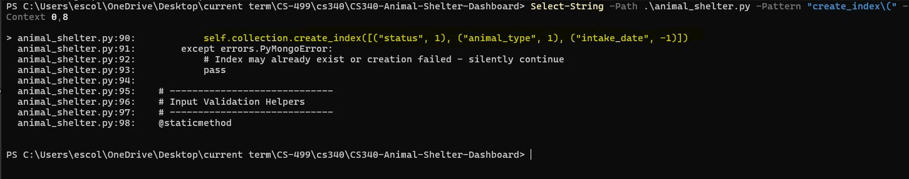
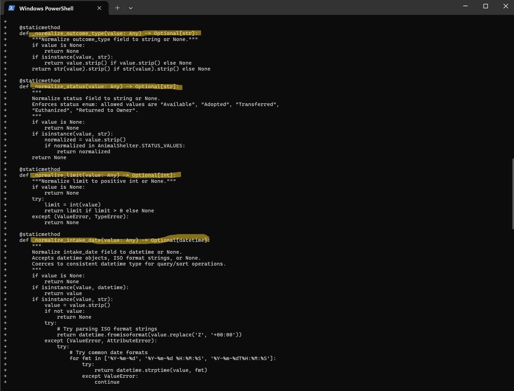
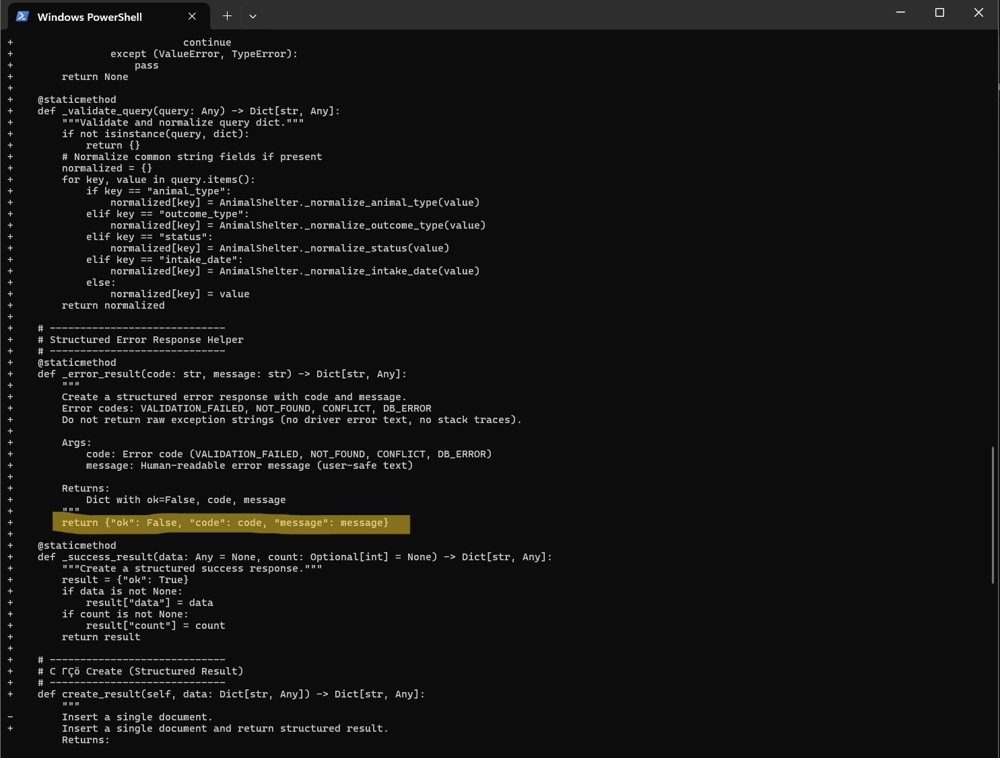
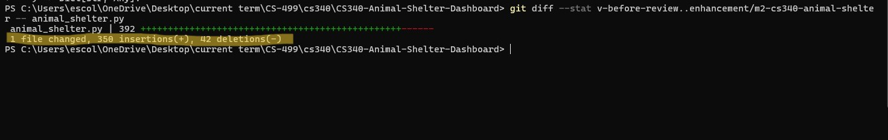
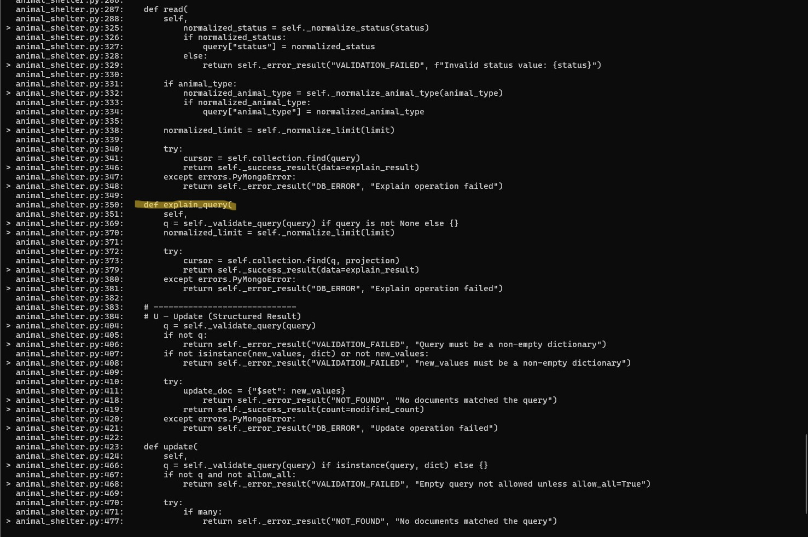

CS499 Portfolio
Table of Contents
Professional Self-Assessment
Throughout my Computer Science program, I developed a professional foundation in software engineering, algorithmic problem solving, database reasoning, and security-aware design. Creating this ePortfolio required me to do more than complete assignments: it required me to justify design decisions, present evidence of improvement, and communicate technical work clearly for multiple audiences. As a result, this portfolio reflects not only what I built, but how I think as an engineer—prioritizing maintainability, correctness, and well-documented decisions that support long-term value.
Across my coursework, I consistently strengthened skills that translate directly to professional software development. In team-oriented activities and peer review cycles, I practiced collaborative habits such as using shared standards, incorporating feedback, and maintaining clarity in version control and documentation. In system analysis and design work, I learned to translate requirements into concrete designs and to communicate technical scope, assumptions, and constraints in a way that is understandable to stakeholders who are not implementing the system. These experiences shaped my professional goals and values: I aim to build software that is technically sound, explainable, and reliable under real-world conditions, where requirements evolve and correctness depends on clear constraints.
My program also strengthened my ability to design and evaluate solutions using algorithmic principles and appropriate data structures. I learned to treat performance trade-offs as engineering decisions rather than afterthoughts, especially when choosing between simpler implementations and approaches that scale better under increased complexity. At the same time, I refined the discipline of making behavior explicit—defining invariants, handling edge cases deliberately, and designing interfaces that remain understandable and testable as projects grow. These skills support employability because they mirror real development environments where code must be maintained by others and where correctness depends on predictable behavior.
Equally important, I developed a security mindset that anticipates misuse and failure conditions. Through secure-coding-oriented learning and repeated practice with validation and error handling, I learned to reduce risk by enforcing constraints early, avoiding ambiguous outcomes, and documenting assumptions that affect safety and correctness. Security in practice is often the result of many small, consistent choices—input validation, controlled failure modes, and clear boundaries between components—and I have worked to make those choices a standard part of my engineering approach.
How the Artifacts Fit Together
The artifacts that follow demonstrate my ability to enhance existing systems across multiple domains and languages while applying consistent professional practices. The CS320 enhancement (Category One: Software Design and Engineering) demonstrates service-layer design improvements through centralized validation, guarded update behavior, and explicit error semantics, emphasizing maintainability and correctness. The CS330 enhancement (Category Two: Algorithms and Data Structures) demonstrates algorithmic reasoning through deterministic object picking using ray and axis-aligned bounding box intersection logic, along with documented performance trade-offs and scaling considerations. The CS340 enhancement (Category Three: Databases) demonstrates database-focused engineering through indexing strategy aligned to common query paths, input normalization, structured data-access results, and explain-based verification to support performance reasoning. Together, these artifacts present a cohesive portfolio of skills: professional communication, algorithmic decision making, engineering discipline, and security-aware design implemented across Java, C++, and Python.
Code Review Video
This artifact demonstrates service-layer design and input validation practices through enhancements to the ContactService class. The Module Three (Milestone Two) improvements focus on centralized validation helpers, guarded update operations, and structured Result/ErrorCode semantics for predictable error handling. The work showcases maintainable service-layer architecture and consistent constraint enforcement across CRUD operations.
Skills Demonstrated
- Service-Layer Design
- Input Validation & Constraint Enforcement
- Structured Error Handling
- Code Refactoring & Maintainability
Before vs After vs Evidence
Before: Validation logic was scattered across methods, update operations could silently ignore invalid inputs, and error handling relied on boolean returns without structured error information.
After: Centralized validation helpers enforce constraints consistently, guarded updates fail operations when constraints are violated, and structured Result/ErrorCode types provide clear error semantics without exposing exceptions.
Evidence: The enhanced codebase demonstrates improved maintainability through reduced duplication, explicit constraint documentation, and predictable failure modes. The internal Result type enables comprehensive error handling while preserving the original public API.
Visual evidence (screenshots, diagrams, or snippets) for this enhancement will appear here.
Outcome Alignment
- Design & Software Engineering: Centralized validation and structured results improve code organization and maintainability
- Algorithms & Data Structures: Efficient constraint checking and guarded update logic demonstrate algorithmic thinking
- Software Development Lifecycle: Refactoring approach preserves backward compatibility while improving robustness
- Communication: Clear documentation of invariants and error codes improves code readability and team collaboration
Links
- Before: https://github.com/i-ekoul/CS320-Software-Testing-QA/tree/v-before-review
- Enhanced: https://github.com/i-ekoul/CS320-Software-Testing-QA/tree/enhancement/m2-cs320-contactservice
- Compare changes: View diff on GitHub
Narrative
Artifact description
This artifact is the ContactService class from CS320, a Java service-layer component that manages Contact records in memory. Created as part of the CS320 course project submission and later enhanced during CS499 Milestone 2. In its original form, the service supported basic create, read, update, and delete operations using an in-memory map keyed by contact identifier, with lightweight validation embedded directly in the update logic.
Justification and improvements
I selected this artifact because it is small enough to review quickly, but it exposes several real-world quality concerns that are directly relevant to software engineering practice: consistent validation, predictable error handling, and maintainable service-layer design.
- Added explicit class invariants in documentation (identifier uniqueness, name-length constraints, ten-digit phone constraint, and address length constraint).
- Centralized validation into private helper methods so constraints are enforced consistently across operations.
- Introduced an internal Result type with ErrorCode values to represent success, invalid input, not found, and conflict conditions without exposing exceptions.
- Refactored update logic to be guarded: any provided non-null field that violates constraints fails the operation rather than silently ignoring invalid updates.
These changes improve readability, reduce duplication, and make the service behavior easier to test and reason about under both normal and edge-case inputs.
Course outcomes coverage
In Milestone 2, I planned to use this artifact to demonstrate core software engineering outcomes related to design quality, correctness, and professional communication. With the Milestone 2 enhancements, I met the primary intent of that plan for service-layer design and validation consistency.
- Outcomes achieved so far: improved design clarity through centralized validation and structured results; strengthened correctness by preventing partial or silent invalid updates; improved documentation of constraints and expected behavior.
- Outcomes remaining: expand automated tests to fully evidence boundary conditions and error cases (for example, duplicate identifiers, invalid phone formats, and over-length fields) and to quantify coverage improvements.
My outcome-coverage plan remains the same overall, but I now have a clearer, test-driven path for demonstrating evidence of correctness rather than relying on informal reasoning.
Reflection
The primary learning from this enhancement was how quickly small service classes become difficult to maintain when validation logic is scattered across methods. By isolating validation rules and introducing a structured result model, I gained a better understanding of how to make behavior explicit and testable without changing the public interface used by dependent code. A key challenge was preserving the original method signatures and behavior expected by the course project while still improving robustness. Addressing that constraint pushed me to use internal helper methods and adapters (boolean-returning public methods delegating to result-returning internal methods), which is a pattern I can apply in larger codebases when refactoring legacy interfaces.
This artifact showcases 3D graphics programming and computational geometry through the implementation of ray-based object picking using axis-aligned bounding box (AABB) slab intersection. The Module Four (Milestone Three) enhancement adds interactive selection capabilities that return the closest intersected object identifier, enabling deterministic and reproducible picking behavior. The implementation includes robust handling of edge cases (parallel rays, rays inside volumes) and documents trade-offs for scaling to larger scenes.
Skills Demonstrated
- 3D Graphics Programming
- Computational Geometry Algorithms
- Ray-Casting & Intersection Testing
- Performance-Aware Design
Before vs After vs Evidence
Before: The scene rendered static 3D objects without interactive selection capabilities. Users could view the scene but had no way to identify or interact with individual objects.
After: Ray-based picking implementation enables deterministic object selection using slab-based ray-AABB intersection. The pickObjectId helper returns the nearest intersected object, with safeguards for edge cases and documentation for broad-phase acceleration strategies.
Evidence: The implementation demonstrates correct geometric reasoning through robust edge-case handling. Trade-off notes document the O(n) per-pick complexity and outline uniform-grid traversal as a future optimization path for larger scenes, showing awareness of scalability considerations.
Visual evidence (screenshots, diagrams, or snippets) for this enhancement will appear here.
Outcome Alignment
- Algorithms & Data Structures: Slab intersection algorithm demonstrates geometric algorithm implementation and complexity analysis
- Design & Software Engineering: Self-contained picking implementation shows modular design without disrupting existing architecture
- Computer Science Foundations: Mathematical correctness in coordinate transformations and intersection calculations
- Communication: In-code documentation and trade-off notes demonstrate professional technical writing
Links
- Before: https://github.com/i-ekoul/CS-330/tree/v-before-review
- Enhanced: https://github.com/i-ekoul/CS-330/tree/enhancement/m2-cs330-picking
- Compare changes: View diff on GitHub
Narrative
Artifact description
This artifact is the Source/MainCode.cpp implementation from CS330, an OpenGL-based graphics programming project. It was originally created as part of the CS330 coursework and was later enhanced during CS499 Module Four (Milestone Three). The project renders a three-dimensional scene using the provided course architecture. The enhanced portion focuses on adding a ray-based picking capability to support selecting objects in the scene.
Justification and improvements
I selected this artifact because it showcases applied computational graphics and systems-level reasoning: mathematical correctness, data-structure planning, and performance considerations in an interactive rendering pipeline.
- Added minimal Ray and axis-aligned bounding box (AABB) types to support a deterministic picking pathway.
- Implemented a robust slab-based ray-AABB intersection routine with safeguards for near-zero direction components and edge cases where the ray begins inside a volume.
- Added a deterministic pickObjectId helper that returns the nearest intersected object identifier, enabling reproducible tests and demonstrations.
- Documented a broad-phase acceleration plan (uniform-grid traversal) to show how the design can scale from a small scene to larger numbers of objects.
These improvements strengthen the artifact by moving it beyond static rendering into interaction design and by demonstrating how correctness and performance planning co-exist in graphics software.
Course outcomes coverage
In Module Four (Milestone Three), I planned for this artifact to demonstrate algorithmic reasoning and software engineering design in a mathematically intensive domain. The Module Four enhancements directly support that plan by implementing a clear algorithm (slab intersection) and documenting the next-step optimization strategy.
- Outcomes achieved so far: demonstrated algorithmic implementation and careful edge-case handling; improved design readability through small, well-scoped types and functions; strengthened maintainability through thorough in-code documentation.
- Outcomes remaining: add lightweight test scaffolding or reproducible evidence (for example, a documented set of sample rays and expected hit identifiers) to more explicitly demonstrate correctness to reviewers who cannot easily run the graphical project.
My outcome-coverage plan remains consistent, but the enhancement highlighted the importance of including reviewer-friendly evidence when artifacts are interactive and environment-dependent.
Reflection
The key learning in this enhancement was translating geometric reasoning into defensible, readable code. The slab method is conceptually simple, but robust handling of parallel rays and numeric edge cases requires disciplined checks and clear invariants. The primary challenge was balancing correctness with minimal intrusion into an existing course architecture. Implementing picking in a self-contained manner and documenting a broad-phase plan provided a clean enhancement that demonstrates growth without destabilizing the original rendering workflow.
This artifact demonstrates database optimization and data-access layer design through enhancements to the animal_shelter.py module. The Milestone Four improvements focus on compound indexing for query performance, input normalization and validation helpers, structured result payloads for consistent error handling, and an explain_query helper for performance verification. The work showcases production-ready database practices and maintainable data-access interfaces.
Skills Demonstrated
- Database Optimization & Indexing
- Data-Access Layer Design
- Input Validation & Normalization
- Query Performance Analysis
Before vs After vs Evidence
Before: Queries executed without compound indexes, input validation was inconsistent, and error handling relied on exceptions or raw return values without structured responses.
After: Idempotent compound-index creation optimizes common query paths, centralized validation ensures well-formed inputs before query execution, and standardized success/error dictionaries enable consistent failure handling. The explain_query helper supports performance verification.
Evidence: The enhanced module demonstrates improved reliability through defensive input handling and structured error contracts. Index-aware design supports predictable query performance as the dataset scales, and the explain helper provides concrete evidence of optimization effectiveness.

The enhanced module creates an idempotent compound index on status, animal_type, and intake_date to optimize the most common query path.

Centralized normalization helpers coerce and validate key fields (such as status, type, limit, and dates) before any database operation is performed.

The module enforces a consistent contract for outcomes using structured success and error dictionaries, improving reliability and UI-safe error handling.

The create flow was refactored to return structured results, and the diff summary shows the enhancement scope was intentional and contained to the data-access layer.

An explain_query helper is included to support query-plan inspection and index verification when a MongoDB environment is available.
Outcome Alignment
- Database Systems: Compound indexing and query optimization demonstrate database performance awareness
- Design & Software Engineering: Structured result payloads and validation helpers improve interface design and maintainability
- Software Development Lifecycle: Performance verification tools support evidence-based optimization
- Communication: Documentation of indexing strategy and validation constraints demonstrates professional database practices
Links
- Before: https://github.com/i-ekoul/CS340-Animal-Shelter-Dashboard/tree/v-before-review
- Enhanced: https://github.com/i-ekoul/CS340-Animal-Shelter-Dashboard/tree/enhancement/m2-cs340-animal-shelter
- Compare changes: View diff on GitHub
Narrative
Artifact description
This artifact is the animal_shelter.py data-access layer from CS340, written in Python and designed to support a MongoDB-backed dashboard for an animal shelter dataset. Originally created for the CS340 project and was later enhanced during CS499 Milestone 4. The module provides create, read, update, and delete operations against a MongoDB collection and is consumed by the dashboard layer to retrieve filtered views of animal records.
Justification and improvements
I selected this artifact because it demonstrates full-stack database fluency at the data-access boundary: query construction, performance considerations, and defensive handling of user-driven filters. These are directly transferable skills for production applications.
- Added an idempotent compound-index creation step for the most common query path (status, animal_type, and intake_date descending) to support predictable query performance.
- Introduced input normalization and validation helpers to ensure filters and limits are well-formed before queries are executed.
- Standardized method responses to structured success/error dictionaries so the calling layer can handle failures consistently without relying on stack traces or raw exceptions.
- Added an explain_query helper to support verifying index usage and query planning when evaluating performance.
Collectively, these improvements strengthen reliability (fewer unhandled failure modes), maintainability (one validation path), and scalability (index-aware query design).
Course outcomes coverage
In Milestone 2, I planned to use this artifact to emphasize database competency and secure, maintainable interfaces between the UI and the persistence layer. The Milestone 4 enhancement aligns strongly with that plan because it operationalizes performance and validation concerns rather than describing them abstractly.
- Outcomes achieved so far: demonstrated database optimization awareness through compound indexing and explain-based verification; improved software design by standardizing structured responses and validation; improved professionalism by documenting assumptions and constraints within the code.
- Outcomes remaining: capture and include concrete evidence (for example, an explain output excerpt or a brief benchmark note) showing the index improves the intended query path, and extend validation tests for a broader set of malformed inputs.
No major updates are needed to my outcome-coverage plan, but the enhancement clarified the specific evidence I will include to substantiate performance claims.
Reflection
This enhancement reinforced that database code quality is not only about correctness, but also about predictable behavior under imperfect inputs and about performance as the dataset grows. Designing the module to return structured results and to validate inputs early reduced the coupling between the dashboard and the database layer. The main challenge was improving robustness without turning a straightforward educational example into an over-engineered framework. Focusing on a small set of high-impact changes, indexing, validation, and consistent error contracts, helped keep the design disciplined and aligned with real-world expectations.